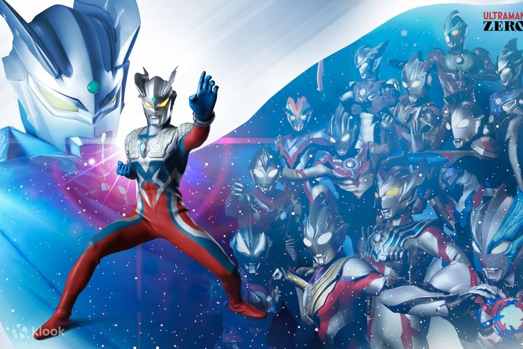

สรุป
Ultraman เป็นฮีโร่ที่มากกว่าการเป็นเพียงตัวละครในซีรีส์ เขาเป็นสัญลักษณ์ของความกล้าหาญ การเสียสละ และความยุติธรรมที่ไม่มีวันสิ้นสุด ด้วยการปรากฏตัวในภาพยนตร์ ซีรีส์ทางโทรทัศน์ และสื่อต่างๆ Ultraman ได้กลายเป็นไอคอนที่เป็นที่รู้จักทั่วโลก ซีรีส์นี้ไม่เพียงแต่สร้างความบันเทิงให้กับผู้ชม แต่ยังสอนบทเรียนสำคัญเกี่ยวกับคุณธรรมและการทำความดีให้กับเด็กๆ และผู้ใหญ่ทุกคน Ultraman ยังเป็นตัวอย่างที่ดีของการที่วัฒนธรรมป๊อปสามารถมีผลกระทบเชิงบวกต่อสังคม การที่เด็กๆ เห็น Ultraman ต่อสู้เพื่อความยุติธรรมและความดีงาม ทำให้พวกเขามีความหวังและแรงบันดาลใจในการทำความดีในชีวิตประจำวัน สุดท้ายแล้ว Ultraman ไม่เพียงแต่เป็นฮีโร่ในจินตนาการ แต่เป็นสัญลักษณ์ของความดีงามที่ทุกคนสามารถเข้าถึงและนำมาใช้ในชีวิตจริงได้
